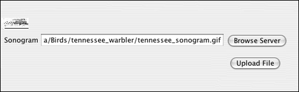
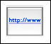
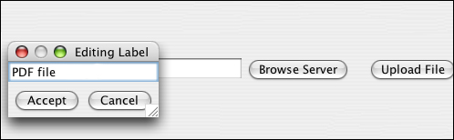
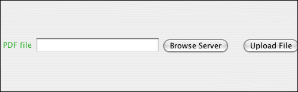

URL widget
A Uniform Resource Locator (URL) is a string of characters that gives the location
of a particular resource (such as a data file or a document). Normally URL refers to
the location of a resource on the internet, but in this application, it can also refer
to a location in a file directory. In other words, you can use this widget to save
the location of important files in your own file system, and to upload those files
into NeuroSys.
Example:

In the Create Form tab, click the URL icon in the toolbar.

A new URL widget appears with a default label.
Double click on the default label, and in the dialog box that appears, enter
the label name you wish to use.

The URL widget is now ready to accept data. The "Browse Server" and "Upload File"
buttons will be used in Enter Data mode for that purpose.
